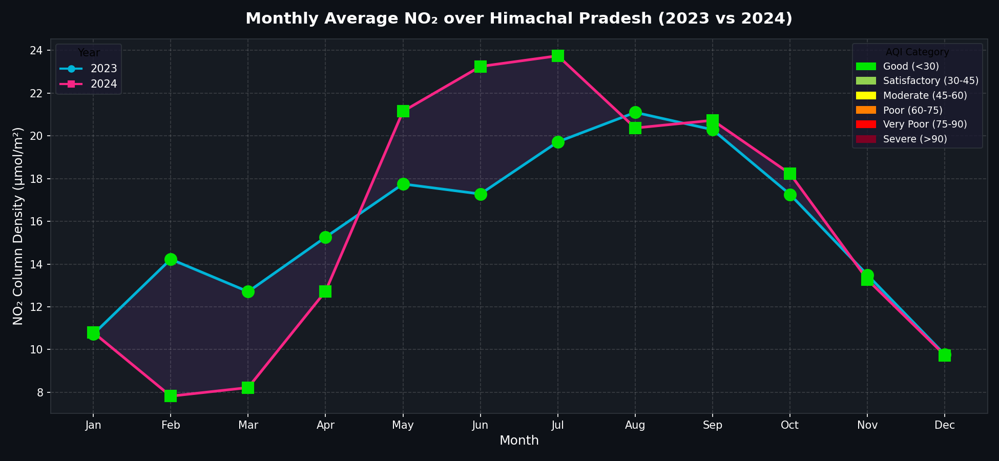
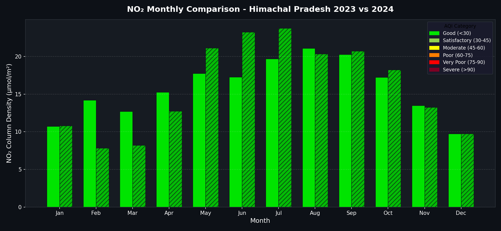
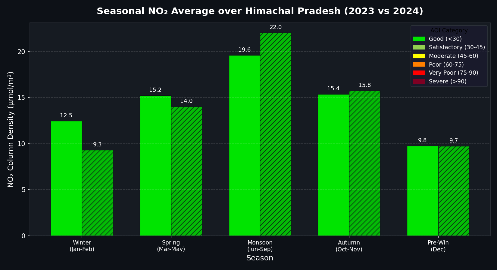
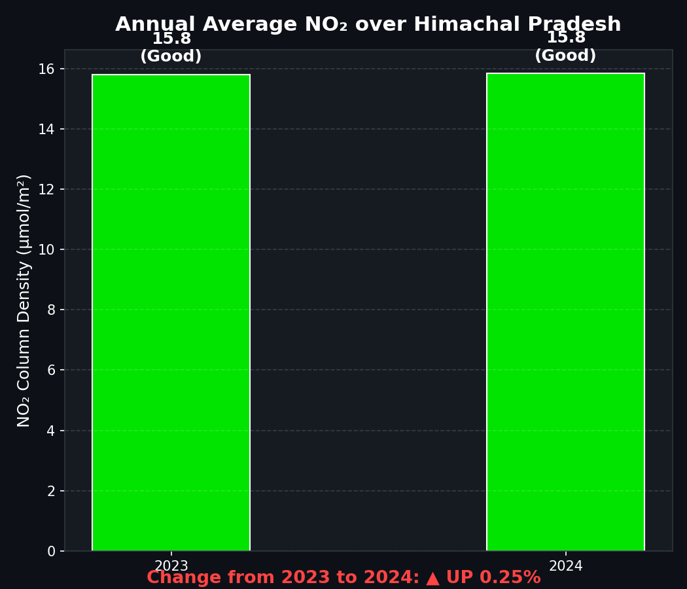

Spatio-temporal study of Nitrogen Dioxide concentration over Himachal Pradesh using Sentinel-5P satellite data processed on Google Earth Engine.
Cloud satellite data processing
ESA satellite with TROPOMI sensor
Main programming language
Interactive map visualization
Graph and chart generation
PDF report generation
Development environment
Project website
Created GEE account and authenticated Python API in PyCharm
Accessed Sentinel-5P NO₂ dataset from GEE data catalog
Filtered data by date range and India geographic boundary
Computed monthly and annual NO₂ mean values using GEE
Created interactive maps with Folium and charts with Matplotlib
Compared 2023 vs 2024 monthly and seasonal NO₂ trends
Generated PDF report and this project website




Indo-Gangetic Plain covering Uttar Pradesh, Bihar, and Delhi shows highest NO₂ due to dense traffic and industrial activity.
November to February shows highest NO₂ levels due to temperature inversions that trap pollutants near the ground surface.
June to August shows lowest NO₂ because rainfall washes pollutants from the atmosphere naturally.
Jharkhand, West Bengal, and coastal Maharashtra show clear industrial pollution hotspots on the satellite map.
Comparison between 2023 and 2024 reveals annual pollution trends and impact of environmental policy changes.
Southern states and northeastern India show significantly lower NO₂ due to less industry and better green cover.